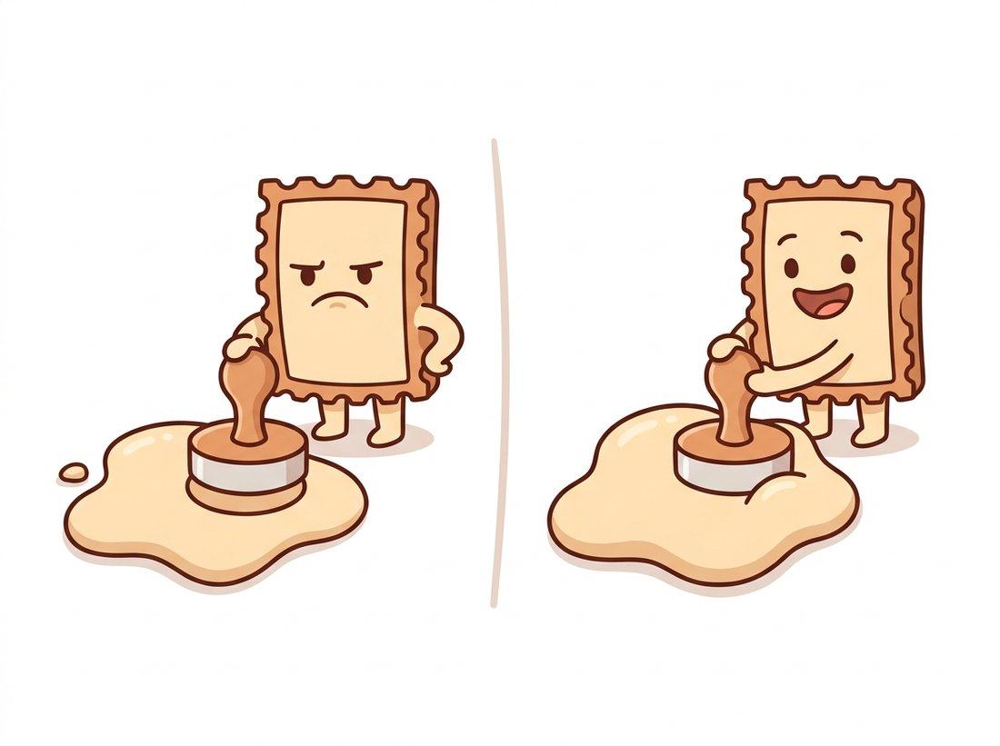

"My job description is three words: slide, fit, judge. I visit every pixel in the image and ask one question. You would be amazed how many careers in manufacturing depend on my answer."
An Overworked Structuring Element
All of mathematical morphology is built from two atoms: erosion asks "does my probe shape fit entirely inside the object here?" and dilation asks "does my probe shape touch the object here?", and every cleanup, measurement, and detection operator in this chapter is a composition of those two questions. This section defines both atoms precisely, implements them from scratch, establishes the small algebra that makes them predictable (duality, composition, monotonicity), and extends them from binary masks to grayscale images, where they turn out to be the min and max cousins of the convolution from Chapter 3.
The previous section established what binary images are (sets) and when pixels form objects (connectivity). Nothing so far changes a mask; this section introduces the operators that do. Both take the same two inputs: the image, and a small probe shape called a structuring element. Both produce a new mask by sliding the probe across every pixel position and recording the answer to a single yes/no question. The genius of the construction, due to Georges Matheron and Jean Serra in 1964, is that the probe's geometry becomes the operator's behavior: choose the probe well and erosion-plus-dilation pipelines delete speckle, fill pinholes, break or build bridges, and measure sizes, all with completely predictable effects.
1. The Structuring Element: A Question Made of Pixels Beginner
A structuring element (SE, also called a kernel in OpenCV's API) is a small binary set $B$ with a designated origin, almost always its center. It plays the same role the kernel played in Chapter 3, but where a convolution kernel holds weights to multiply, a structuring element holds only membership: these pixels are part of my question, those are not. The three standard shapes are exactly the unit disks of the three grid metrics from Section 6.1: the cross (city-block disk), the square (chessboard disk), and the ellipse (discretized Euclidean disk). OpenCV constructs all three:
# Print the three canonical structuring elements side by side. Each is the
# unit disk of one grid metric from Section 6.1: cross (city-block), rect
# (chessboard), and ellipse (Euclidean), and that geometry propagates downstream.
import cv2
import numpy as np
for shape, name in [(cv2.MORPH_CROSS, "cross"),
(cv2.MORPH_RECT, "rect"),
(cv2.MORPH_ELLIPSE, "ellipse")]:
se = cv2.getStructuringElement(shape, (5, 5))
print(name); print(se)
# Output:
# cross rect ellipse
# [[0 0 1 0 0] [[1 1 1 1 1] [[0 0 1 0 0]
# [0 0 1 0 0] [1 1 1 1 1] [1 1 1 1 1]
# [1 1 1 1 1] [1 1 1 1 1] [1 1 1 1 1]
# [0 0 1 0 0] [1 1 1 1 1] [1 1 1 1 1]
# [0 0 1 0 0]] [1 1 1 1 1] [0 0 1 0 0]]cv2.getStructuringElement, printed side by side: each is the unit disk of one grid metric from Section 6.1, and the choice imprints that metric's geometry onto every result downstream.Which shape to use is a real decision, not a formality. A square SE grows and shrinks objects with square corners and treats diagonals generously; an elliptical SE preserves roundness and is the default for organic shapes; a cross is the cheapest and matches 4-connectivity. The SE can also be anything else: a horizontal line to operate only on horizontal structure, a single off-center pixel to translate the image, or a ring to detect specific gaps. Asymmetric, task-shaped SEs are an underused superpower; we will meet a line-shaped one in the practical example below.
Because the SE slides over the image exactly as a convolution kernel does in Chapter 3, a common mistake is to treat it the same way: to read its entries as weights and to assume a larger SE simply "smooths more," the way a wider Gaussian does. In fact the SE carries no weights at all, only membership (which offsets are part of the question), and morphology averages nothing: erosion takes a hard minimum and dilation a hard maximum over that footprint. The practical consequence is that growing the SE does not gently blur, it deletes or fills every structure smaller than the new size in one step, and it stamps the SE's own geometry (square corners from a square, rounded corners from a disk) onto every survivor. A blur preserves where edges roughly were; an oversized opening can erase a thin crack or a hairline lead entirely and leave no trace that it ever existed.
2. Erosion: Does It Fit? Beginner
The erosion of a foreground set $A$ by a structuring element $B$ keeps exactly the positions where the probe, planted with its origin at that position, fits entirely inside the foreground:
$$ A \ominus B \;=\; \{\, z \;:\; B_z \subseteq A \,\}, $$
where $B_z$ denotes $B$ translated so its origin sits at $z$. The consequences follow directly from the definition, and you should be able to predict each one before running any code. Objects shrink by roughly the SE's radius on every side. Any foreground island smaller than the SE vanishes entirely (nowhere inside it does the probe fit). Thin bridges narrower than the SE are severed. Holes and gulfs grow. Erosion is the pessimist's operator: a pixel survives only if its entire neighborhood, as defined by $B$, agrees it should.
Implementing erosion from scratch is worth doing once, because it reveals the operator's computational identity: erosion by a flat SE is nothing more than a sliding minimum filter. Where Chapter 3's filters computed weighted sums over a window, erosion computes the minimum over the SE's footprint; for a 0/1 mask, the window minimum is 1 exactly when every probed pixel is 1, which is the "fits" test verbatim.
# Implement erosion from scratch as a sliding-window minimum to expose its
# computational identity, then check it pixel-for-pixel against cv2.erode.
# The padding choice encodes OpenCV's "outside is foreground" border rule.
import cv2
import numpy as np
from numpy.lib.stride_tricks import sliding_window_view
def erode_scratch(mask01, k=3):
"""Erosion by a k x k square SE, as a sliding-window minimum."""
pad = k // 2
# OpenCV treats out-of-image pixels as foreground during erosion,
# so border objects are not eaten from outside; pad with 1 to match.
padded = np.pad(mask01, pad, mode="constant", constant_values=1)
windows = sliding_window_view(padded, (k, k)) # shape (H, W, k, k)
return windows.min(axis=(2, 3)).astype(np.uint8)
mask = (cv2.imread("part_mask.png", cv2.IMREAD_GRAYSCALE) > 0).astype(np.uint8)
ours = erode_scratch(mask, 3)
opencv = cv2.erode(mask, np.ones((3, 3), np.uint8))
print("matches cv2.erode:", bool((ours == opencv).all()))
print("foreground before:", int(mask.sum()), " after:", int(ours.sum()))
# Representative output:
# matches cv2.erode: True
# foreground before: 48211 after: 44705sliding_window_view and verified pixel-for-pixel against cv2.erode; the padding comment captures OpenCV's border convention, the same boundary question that Chapter 3 raised for convolution, answered differently here.3. Dilation: Does It Hit? Beginner
Dilation is erosion's optimistic twin. A position belongs to the dilation if the probe, planted there, touches the foreground anywhere:
$$ A \oplus B \;=\; \{\, z \;:\; (\hat{B})_z \cap A \neq \emptyset \,\}, $$
where $\hat{B}$ is $B$ reflected through its origin. (The reflection is a technicality that makes the algebra below come out clean; for the symmetric crosses, squares, and disks used in practice, $\hat{B} = B$ and you may ignore it.) Dilation's effects mirror erosion's exactly: objects grow by the SE's radius, holes and gaps smaller than the SE close up, nearby objects merge, and concavities fill in. Computationally it is the sliding maximum filter. Figure 6.2.1 puts the two operators side by side on one shape.
The whole section reduces to one paired sentence worth memorizing: erosion is the pessimist asking "does my probe fit entirely inside?" (a hard minimum that shrinks objects and deletes specks), dilation is the optimist asking "does my probe hit the object anywhere?" (a hard maximum that grows objects and fills holes). Fit shrinks, hit grows; min versus max; pessimist versus optimist. Every compound operator in Section 6.3 is just these two questions asked in a chosen order, so recalling which atom does what is recalling almost all of morphology. The illustration below personifies exactly this contrast as a cautious twin and a cheerful one.

Notice in Figure 6.2.1 that the two operators are not inverses: erosion deleted the speck, and no dilation can resurrect it, while dilation sealed the notch, and no erosion can reopen it. That irreversibility looks like a defect and is actually the entire point. Applying one after the other discards structure smaller than the SE permanently while restoring everything else to its original size, and that composition (opening and closing) is the subject of Section 6.3. In code, both atoms are one-liners, and stacking them via the iterations argument behaves exactly as the algebra in the next subsection predicts:
# Run both atoms in production form with an elliptical SE, then count
# components to watch the two raw effects: erosion deletes speckle islands,
# dilation merges nearby blobs. Section 6.3 tames these into open and close.
import cv2
import numpy as np
se = cv2.getStructuringElement(cv2.MORPH_ELLIPSE, (5, 5))
eroded = cv2.erode(mask, se) # one radius inward
dilated = cv2.dilate(mask, se) # one radius outward
dilated2 = cv2.dilate(mask, se, iterations=2) # two radii outward
n_before, _ = cv2.connectedComponents(mask)
n_eroded, _ = cv2.connectedComponents(eroded)
n_dilated, _ = cv2.connectedComponents(dilated)
print(f"components: original {n_before - 1}, "
f"eroded {n_eroded - 1}, dilated {n_dilated - 1}")
# Representative output on a speckled multi-part mask:
# components: original 143, eroded 9, dilated 31
# (erosion deleted 134 specks; dilation merged nearby blobs)cv2.erode and cv2.dilate with an elliptical SE, plus component counts showing erosion wiping out speckle and dilation merging close neighbors, the two raw effects that Section 6.3 will tame into opening and closing.Run Code Fragment 3 in a loop over cv2.getStructuringElement(cv2.MORPH_ELLIPSE, (k, k)) for odd $k$ from 3 to 15, printing the eroded component count each time. Two things become tangible that no static figure conveys. First, the count does not fall smoothly: it drops in steps, and each step marks a size at which a whole population of specks finally stops fitting the probe, which is granulometry (Section 6.3) glimpsed early. Second, push $k$ past the radius of a real object and the count drops below the true number of parts: erosion has started deleting things you wanted to keep. The $k$ at which that happens is exactly twice the thinnest genuine feature in your mask, the same quantity the praline example below sizes by hand. Then swap cv2.MORPH_ELLIPSE for cv2.MORPH_CROSS and rerun: a one-pixel diagonal line survives the cross at one size and the ellipse at another, the connectivity story of Section 6.1 made visible in a single column of numbers.
The from-scratch erosion above is about ten lines and allocates a large window view; cv2.erode(mask, se) is one line and typically runs an order of magnitude faster. Internally OpenCV decomposes rectangular SEs into a horizontal and a vertical pass (the same separability trick as Chapter 3's Gaussian, but with min in place of sum), uses the van Herk/Gil-Werman algorithm that computes any-width sliding minima in just three comparisons per pixel independent of SE size, vectorizes with SIMD, and handles the border convention and arbitrary SE shapes. scikit-image users get the same atoms as skimage.morphology.binary_erosion and binary_dilation operating on boolean arrays.
4. The Algebra: Four Laws That Make Morphology Predictable Intermediate
Morphology earns the name "mathematical" from a small set of laws. Four matter in daily practice.
Duality. Eroding the foreground is the same as dilating the background, and vice versa: $(A \ominus B)^c = A^c \oplus \hat{B}$. This is why every statement in this chapter comes in pairs (specks versus pinholes, bridges versus gaps): each fact about erosion is a fact about dilation viewed from the background's side, with the foreground/background asymmetry of Section 6.1 lurking underneath.
Composition. Successive dilations combine into one dilation by a grown SE: $(A \oplus B) \oplus C = A \oplus (B \oplus C)$, and likewise $(A \ominus B) \ominus C = A \ominus (B \oplus C)$. This is what makes iterations=n meaningful: $n$ erosions by a $3 \times 3$ square equal one erosion by a $(2n{+}1) \times (2n{+}1)$ square. It is also a real performance lever, the morphological analogue of the Gaussian cascade property from Chapter 3: repeated small probes are usually cheaper than one big one.
Monotonicity. Both operators are increasing: if $A \subseteq A'$ then $A \ominus B \subseteq A' \ominus B$ and $A \oplus B \subseteq A' \oplus B$. Growing the input can never shrink the output. Combined with $A \ominus B \subseteq A \subseteq A \oplus B$ (for an SE containing its origin), this gives hard guarantees about what a pipeline can and cannot do, which is precisely the auditability that makes morphology beloved in regulated industries.
Translation invariance. Shifting the image shifts the result identically. Morphology has no privileged location, just as convolution does not; all the spatial intelligence lives in the SE.
Convolution computes sum of products over a window; erosion and dilation compute min and max over a window. Swap the algebra (sum, product) for (min, plus) or (max, plus), the so-called tropical semirings, and the entire filtering theory of Chapter 3 has a morphological mirror image: SEs are kernels, composition is the convolution theorem, and the van Herk sliding-min trick is the separability speedup. The mirror extends into deep learning: max pooling in the CNNs of Chapter 19 is exactly a grayscale dilation by a square SE, executed with a stride.
5. Grayscale Morphology: Shadows and Peaks Advanced
Nothing in the min/max formulation requires the input to be binary. For a grayscale image $f$ and a flat SE $B$, define
$$ (f \ominus B)(x) \;=\; \min_{s \in B} f(x + s), \qquad (f \oplus B)(x) \;=\; \max_{s \in B} f(x - s). $$
Grayscale erosion replaces each pixel with the darkest value in its neighborhood; dilation with the brightest. The visual effect is distinctive: erosion grows dark regions and eats bright peaks narrower than the SE, dilation does the opposite. A useful mental image is terrain: dilation is the landscape seen after a glowing ball of the SE's shape rolls over the surface (peaks broaden), erosion after it rolls under (valleys broaden). These grayscale atoms power the top-hat illumination correction in Section 6.3, and they connect back to a filter you already know: for any fixed window, erosion is the 0th percentile, dilation the 100th, and the median filter of Chapter 3 the 50th. All three are rank filters; morphology simply claims the extremes.
# Grayscale erosion and dilation on a circuit-board photo: erosion keeps the
# local darkest value, dilation the local brightest, and their difference is
# a per-pixel dynamic range that previews Section 6.3's morphological gradient.
import cv2
import numpy as np
gray = cv2.imread("pcb_photo.jpg", cv2.IMREAD_GRAYSCALE)
se = cv2.getStructuringElement(cv2.MORPH_ELLIPSE, (15, 15))
bright_floor = cv2.erode(gray, se) # local darkest: bright details erased
bright_ceil = cv2.dilate(gray, se) # local brightest: dark details erased
# Per-pixel dynamic range of each neighborhood, a texture/edge indicator:
local_range = cv2.subtract(bright_ceil, bright_floor)
print(gray.mean(), bright_floor.mean(), bright_ceil.mean())
# Representative output:
# 117.4 86.2 151.9 (erosion darkens, dilation brightens, mean shifts ~30)Who: The automation engineer at a confectionery plant, responsible for verifying that each tray leaving the enrobing line carries exactly 24 pralines.
Situation: A camera above the line photographs each backlit tray; thresholding (per Chapter 2) yields clean silhouettes, and a component count (per Section 6.4) checks for 24. The system worked until a recipe change made the chocolate coating slightly tackier, and pralines began landing in contact with their neighbors.
Problem: Touching pralines merged into single blobs, so trays of 24 were counted as 19 or 20 and wrongly rejected; rejects climbed to 11 percent and the night shift started ignoring the alarm, which is how real defects get through.
Decision: Since pralines are uniform in size (28 px radius) and contacts are shallow, the engineer inserted a single erosion with an elliptical SE of radius 9 before counting: large enough to sever any plausible contact neck, far too small to delete a praline. Counting then ran on the eroded mask.
Result: Counting accuracy returned to 99.8 percent at zero added hardware cost and 0.4 ms added latency. The team documented the SE radius against praline geometry in the line's QA file, and added a flag to route heavily merged trays (necks thicker than the erosion could cut) to the distance-transform separator they later built from Section 6.5.
Lesson: When object sizes are known and uniform, a single well-sized erosion is a separator, a denoiser, and a guarantee, and its failure condition (necks wider than the SE) is exactly statable in advance. Predictable failure modes are a feature you will miss the first time a neural network fails creatively.
Erosion and dilation are differentiable almost everywhere (max and min have well-defined subgradients, the same fact that lets max pooling train), and that has pulled morphology inside modern pipelines. Kornia's kornia.morphology module ships GPU-batched, autograd-compatible erosion, dilation, opening, and closing for PyTorch 2.x, so a mask-cleanup step can sit inside a trained model rather than after it. A parallel research line learns the structuring elements themselves: morphological layers built on the max-plus (tropical) algebra of this section's Key Insight, trained end to end, with soft-morphology relaxations (log-sum-exp approximations of min/max) smoothing the gradients. And at the applied end, the post-processing recipes for Segment Anything outputs, including SAM 2 (Ravi et al., 2024, arXiv:2408.00714), still lead with a dilation/erosion pass to seal mask pinholes before downstream use: the 1964 atoms, now cleaning the masks of a 2024 foundation model.
The term "erosion" is geological on purpose. Matheron and Serra's employer, the Paris School of Mines, wanted to quantify how mineral grains in rock sections would survive progressively aggressive acid etching, which physically is erosion by an ever-larger probe. Dilation entered as the dual needed to make the algebra close. Industrial vision later adopted both words unchanged, which is why a bottling plant's QA code reads like a weather report for canyons.
A mask contains: (a) a $20 \times 20$ solid square, (b) a one-pixel-wide horizontal line of length 30, (c) a one-pixel-wide diagonal line of length 30, and (d) a $3 \times 3$ solid square. For erosion by a $3 \times 3$ square SE and separately by a $3 \times 3$ cross SE, predict what survives of each object and its exact dimensions. Then explain why the diagonal line's fate differs between the two SEs, and connect the explanation to the connectivity discussion of Section 6.1.
Implement dilate_scratch(mask01, k) as a sliding-window maximum, mirroring this section's erosion implementation, and decide what constant the padding must use so that results match cv2.dilate exactly at the image border (hint: it is not the same constant as for erosion, and the duality law tells you why). Verify equality against OpenCV on 100 random masks, then verify the composition law numerically: two dilations by your $3 \times 3$ SE must equal one dilation by the corresponding $5 \times 5$ SE.
Test the duality law $(A \ominus B)^c = A^c \oplus \hat{B}$ numerically: on random masks, compare cv2.erode(mask, se) against the complement of cv2.dilate applied to the complemented mask, using an asymmetric SE (for instance a $1 \times 3$ line with the origin at one end, built by hand) so the reflection $\hat{B}$ actually matters. Identify the flip you must apply to the SE to make the two sides agree, then prove the law in two lines of set algebra starting from the definitions in this section.